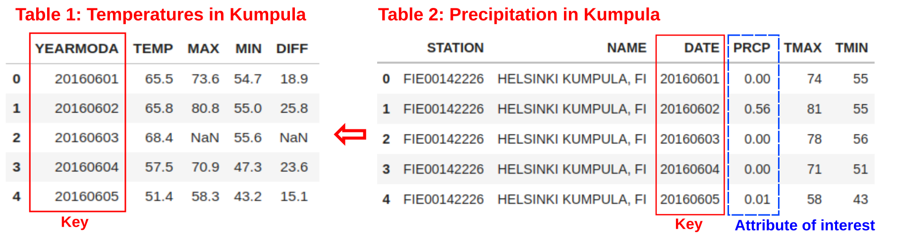

Common tabular operations in pandas#
Now you have learned the basics of pandas data structures (i.e. Series and DataFrame) and you should be familiar with basic methods for loading and exploring data. Next, we will continue exploring the pandas functionalities, and see how it can be used for data manipulation, conducting simple calculations, and making selections based on specific criteria.
Basic calculations#
One of the most common things to do in pandas is to create new columns based on calculations between different variables (columns). Next, we will learn how to do that using the same input data ('Kumpula-June-2016-w-metadata.txt') as in the previous section. We will first load it using the pd.read_csv() method. Remember, that the first 8 lines contains the metadata which we will skip. This time, let’s store the filepath into a separate variable in order to make the code more readable and easier to change afterwards (a good practice).
import pandas as pd
# Define file path:
fp = "data/Kumpula-June-2016-w-metadata.txt"
# Read in the data from the file (starting at row 9):
data = pd.read_csv(fp, skiprows=8)
As a first step, it is always good to remember to check the data after reading it. This way we can be sure that everything looks as it should.
data.head()
All good. Now we can start by creating a new column DIFF in our DataFrame. This can be done by specifying the name of the column and giving it some default value (in this case the decimal number 0.0):
data["DIFF"] = 0.0
data.head()
As we can see, now we have a new column (DIFF) in our DataFrame that has value 0.0 for all rows. When creating a new column, you can initialize it with any value you want. Typically, the value could be a number 0 as in here, but it could also be None (i.e. nothing), some text (e.g. "test text"), or more or less any other value or object that can be represented as a single item. You could even initiliaze the column by storing a function inside the cells if you like. Let’s continue by checking the datatype of our new column:
data["DIFF"].dtypes
As we can see, pandas created a new column and automatically recognized that the data type is float as we passed a 0.0 value to it. Great, but whatabout making those calculations with pandas as promised in the beginning? Next, we will calculate the difference between MAX and MIN columns to get an idea how much the temperatures have been varying during different days. The result will be updated into the column DIFF that we created earlier. A typical way of conducting calculations such as this, is to access the Series (columns) that interests us from the DataFrame and conduct the mathematical calculation using the selected columns. Typically you store the result directly into a column in the DataFrame, like following:
data["DIFF"] = data["MAX"] - data["MIN"]
data.head()
The calculations were stored into the DIFF column as planned. Conducting calculation like this is extremely fast in pandas because the math operations happen in vectorized manner. This means that instead of looping over individual values of the DataFrame and comparing them to each other, calculating the difference happens simultaneously at all rows. You can also create new columns on-the-fly when doing the calculation (i.e. the column does not have to exist before). Furthermore, it is possible to use any kind of math algebra (e.g. subtracttion, addition, multiplication, division, exponentiation, etc.) when creating new columns. We can for example convert the Fahrenheit temperatures in the TEMP column into Celsius using the formula that we have seen already many times. Let’s do that and store it in a new column called TEMP_CELSIUS:
data["TEMP_CELSIUS"] = (data["TEMP"] - 32) / (9 / 5)
data.head()
Question 3.2#
Calculate the temperatures in Kelvins using the Celsius values and store the result in a new column called TEMP_KELVIN in our dataframe. 0 Kelvins is is -273.15 degrees Celsius as we learned in Chapter 2, and the formula for converting degrees Celsius (C) to Kelvins (K) is: K = C + 273.15
# Use this cell to enter your solution.
# Solution
data["TEMP_KELVIN"] = data["TEMP_CELSIUS"] + 273.15
Selecting and updating data#
We often want to make selections from our data and only use specific rows from a DataFrame in the analysis. There are multiple ways of selecting subsets of a pandas DataFrame than can be based on e.g. specific index values or using some predefined criteria to make the selection, such as “give me all rows where values in column X are larger than zero”. Next, we will go through the most useful tricks for selecting specific rows, columns and individual values.
Selecting rows and columns#
One common way of selecting only specific rows from your DataFrame is done via a concept of slicing. Getting a slice of data in pandas can be done in a similar manner as with normal Python lists by specifying an index range inside square brackets: dataframe[start_index:stop_index]. Let’s select the first five rows and assign them to a variable called selection. Here, we will first see how selecting the data works like you would do with “normal” Python lists, based on index values:
selection = data[0:5]
selection
Here we have selected the first five rows (index 0-4) using the integer index. Notice that the logic here follows how Python’s list slicing (or range function) works, i.e. the value on the right side of the colon (here number 5) tells when to stop, but that value is not taken into the final selection. Hence, the syntax is start_index:stop_index (also additional parameter :step could be added here to the end).
Doing selections like in the previous example can be done, but there is also a better and more flexible way of selecting data using so called .loc label-indexing. As the name implies, .loc selects data based on axis labels (row and column labels). This does not necesssarily tell much to you at this point, but .loc makes it possible to conduct more specific selections, such as allowing you to choose which columns are chosen when selecting a subset of rows. It also makes possible to benefit from row labels that are not necessarily sequantial numbers (as with all our examples thus far), but they can represent other objects as well, such as dates or timestamps. Hence, .loc can become very handy when working with timeseries data (we will learn more about this later). Let’s test the .loc label-indexing by selecting temperature values from column TEMP using rows 0-5:
# Select temp column values on rows 0-5
selection = data.loc[0:5, "TEMP"]
selection
Notice that in this case, we get six rows of data (index 0-5)! This happens because we are now doing the selection based on axis labels instead of normal Python-kind of indexing. It is important to notice the difference between these two approaches, as mixing the two may cause confusion, incorrect analysis results or bugs in your code, if you do not pay attention. We recommend to use .loc always when possible (there are specific cases when you want to use other approaches, more about this soon). Hence, the basic syntax for .loc is:
.loc[first_included_label:last_included_label, columns]
By looking at the syntax, you might guess that it is also possible to select multiple columns when using .loc. Next, we will test this by selecting the TEMP and TEMP_CELSIUS columns from a set of rows by passing them inside a list:
selection = data.loc[0:5, ["TEMP", "TEMP_CELSIUS"]]
selection
As a result, we now have a new DataFrame with two columns and 6 rows (i.e. index labels ranging from 0 to 5).
Question 3.3#
Calculate the mean temperature (in Celsius) for the last seven days of June. Do the selection using the row index values.
# Use this cell to enter your solution.
# Solution
data.loc[23:29, "TEMP_CELSIUS"].mean()
Selecting a single row or value#
You can also select an individual row from specific position using the .loc indexing. Here we select all the data values using index 4 (the 5th row):
row = data.loc[4]
row
.loc indexing returns the values from that position as a Series where the indices are actually the column names of those variables. Hence, you can access the value of an individual column by referring to its index using following format (both should work):
# Print one attribute from the selected row
row["TEMP"]
Sometimes it is enough to access a single value in a DataFrame directly. In this case, we can use .at instead of .loc.
Let’s select the temperature (column TEMP) on the first row (index 0) of our DataFrame:
selection.at[0, "TEMP"]
As an output, we got the individual value 65.5. .at works only when accessing a single value, whereas the .loc can be used to access both a single or multiple values at the same time. The end result when fetching a single value with .loc is exactly the same. The difference between the two approaches is minimal, hence we recommend using .loc in all cases because it is more flexible (.at is slightly faster but in most cases it does not make a difference):
selection.loc[0, "TEMP"]
Selections based on index positions#
As we have learned thus far, .loc and .at are based on the axis labels - the names of columns and rows. For positional based indexing, pandas has an .iloc which is based on integer value indices. With .iloc, it is also possible to refer to the columns based on their index value (i.e. to a positional number of a column in the DataFrame). For example, data.iloc[0,0] would return 20160601 in our example DataFrame which is the value on the first row and first column in the data:
# Check the first rows
print(data.head())
print()
print("Value at position (0,0) is", data.iloc[0, 0])
Hence, the syntax for .iloc is:
.iloc[start_row_position:stop_row_position,
start_column_position:stop_column_position]
By following this syntax, we can access the value on the first row and second column (TEMP) by calling:
data.iloc[0, 1]
It is also possible to get ranges of rows and columns with .iloc. For example, we could select YEARMODA and TEMP columns from the first five rows based on their indices (positions) in the data. Here, we will select rows from positions 0 to 5 and columns from positions 0 to 2:
selection = data.iloc[0:5:, 0:2]
selection
As a result we indeed get only two columns and the first five rows. A good thing to notice, is that with .iloc, the behavior in terms of how many rows are returned differs from .loc. Here, the 0:5 returns 5 rows (following the Python list slicing behavarior), whereas using .loc would return 6 rows (i.e. also including the row at index 5).
One handy functionality with .iloc is the ability to fetch data starting from the end of the DataFrame. Hence, it is possible to retrieve the last row in the DataFrame by passing a negative number to the .iloc, where value -1 corresponds to the last row (or column), -2 corresponds to the second last, and so on. Following this, it is easy to see e.g. what is the TEMP_CELSIUS value (the last column) of the last row of data:
data.iloc[-1, -1]
Selections using listed criteria#
One common way of selecting rows from a DataFrame is to provide a list of values that are used for finding matching rows in a specific DataFrame column. For example, selecting rows that match specific dates can be done by passing a list of values used as criteria to the .isin() -function of pandas. This will go through each value in the selected column (in this case YEARMODA) and checks whether there is a match or not. As an output, the .isin() command returns a Series of boolean values (True or False) which can be combined with .loc to do the final selection that returns only rows that meet the selection criteria.
# List of values that will be used as basis for selecting the rows
selection_criteria = [20160601, 20160608, 20160609]
# Do the selection based on criteria applied to YEARMODA column
data.loc[data["YEARMODA"].isin(selection_criteria)]
Conditional selections#
One really useful feature in pandas is the ability to easily filter and select rows based on a conditional statement.
The following example shows how we check if the Celsius temperature at each row on the TEMP_CELSIUS column is higher than 15 degrees:
# This cell sets the number of lines of pandas output to a maximum of 9
# The cell is removed when building the website/book PDF
pd.set_option("display.max_rows", 9)
data["TEMP_CELSIUS"] > 15
As a result, we get a Series of booleans, where the value True or False at each row determines whether our condition was met or not. This kind of Series or numpy.array of boolean values based on some predefined criteria is typically called a mask. We can take advantage of this mask when doing selections with .loc based on specific criteria. In the following, we will use the same criteria, and store all rows meeting the criteria into a variable warm_temps (warm temperatures). We can specify the criteria directly inside the .loc square brackets. Next, we will select rows which have higher temperature (in Celsius) than 15 degrees:
warm_temps = data.loc[data["TEMP_CELSIUS"] > 15]
warm_temps
It is also possible to combine multiple criteria at the same time. Here, we select temperatures above 15 degrees that were recorded on the second half of June in 2016 (i.e. YEARMODA >= 20160615).
Combining multiple criteria can be done with the & operator (AND) or the | operator (OR). Notice, that it is often useful to separate the different clauses inside the parentheses (). Let’s select rows having higher temperature than 15 degrees from late June 2016 (from 15th day onwards):
warm_temps = data.loc[(data["TEMP_CELSIUS"] > 15) & (data["YEARMODA"] >= 20160615)]
warm_temps
Now we have a subset of our DataFrame with only rows where the TEMP_CELSIUS is above 15 and the dates in YEARMODA column start from 15th of June. Notice, that the index values (numbers on the left) are still showing the index labels from the original DataFrame. This indicates that our result is really a slice from the original data.
It is possible to reset the index using reset_index() function which makes the index numbering to start from 0 and increase the index values in a sequantal manner. This is often a useful operation to do, because it makes it easier then to slice the data with .loc or .iloc. By default the reset_index() would make a new column called index to keep track on the previous index which might be useful in some cases but here not, so we can omit that by passing parameter drop=True:
warm_temps = warm_temps.reset_index(drop=True)
warm_temps
As can be seen, now the index values goes from 0 to 12. Resetting the index has now also unlinked the warm_temps DataFrame from the data, meaning that it is not a view anymore but an independent Pandas object. When making selections, it is quite typical that pandas might give you warnings if you modify the selected data without first resetting the index or taking a copy of the selected data. To demonstrate this, we will make the selection again and do a small change for the first value of the TEMP_CELSIUS column by updating it to 17.5. Here, we can take advantage of the .iloc which makes it easy to access the first row based based on position 0:
warm_temps = data.loc[(data["TEMP_CELSIUS"] > 15) & (data["YEARMODA"] >= 20160615)]
warm_temps.iloc[0, -1] = 17.5
Because we modified the selection which is a slice from the original data, pandas gives us a warning about a possibly invalid value assignment. In most cases, the warning can be ignored but it is a good practice to always take a copy when doing selections, especially if you continue working with the selected data and possibly modify it further:
# Make the selection and take a copy
warm_temps = data.loc[
(data["TEMP_CELSIUS"] > 15) & (data["YEARMODA"] >= 20160615)
].copy()
# Now update the first value of the last column
warm_temps.iloc[0, -1] = 17.5
As we can see, now we did not receive any warnings, and it would be safe to continue working with this selection without needing to worry that there are some “hidden linkages” between our DataFrames that could cause issues (we discuss more about this in the next section).
Question 3.4#
Find the mean temperatures (in Celsius) for the last seven days of June again. This time you should select the rows based on a condition for the YEARMODA column.
# Use this cell to enter your solution.
# Solution
data["TEMP_CELSIUS"].loc[data["YEARMODA"] >= 20160624].mean()
View vs a copy#
A good thing to know when doing selections, is that the end result after making the selection can sometimes result to something called a view. In such cases, the selection and the original data may still linked to each other. This happens e.g. if you make a selection like above but return only a single column from the original data. In a situation where you have a view, a change in the original data for that specific column can also change the value in the selection. Without going into details why and when this happens, this behavior can nevertheless be confusing and have unexpected consequences. To avoid this behavior, a good practice to follow is to always make a copy whenever doing selections (i.e. unlink the two DataFrames). You can make a copy easily while doing the selection by adding a .copy() at the end of the command:
selection = data.loc[0:5, ["TEMP", "TEMP_CELSIUS"]].copy()
selection
Now we have the exact same data in our end result, but we have ensured that the selection is not linked to the original data anymore. To demonstrate what can happen with the view, let’s make a selection of a single column from our data (which will be a view), and modify the data a bit to see what consequences might happen if we are not careful:
temp = selection["TEMP"]
temp
Now if we make a change to our original data, i.e. selection, it will also influence our values in temp:
selection.iloc[0, 0] = 30.0
selection.head()
# Check the values in temp (which we did not touch)
temp
As we can see, now the value in our temp Series changed from 65.5 to 30.0 although we did not make any change to it directly. The change happened nevertheless because the data objects were still linked to each other.
Dealing with missing data#
As you may have noticed by now, we have several missing values for the temperature minimum, maximum, and difference columns (MIN, MAX, DIFF, and DIFF_MIN). These missing values are indicated as NaN (not-a-number). Having missing data in your datafile is really common situation and typically you want to deal with it somehow. Common procedures to deal with NaN values are to either remove them from the DataFrame or fill them with some value. In Pandas both of these options are really easy to do. Let’s first start by checking whether our data has NaN values:
warm_temps
As we can see, the MIN and DIFF columns are missing values at index 26. It is also possible to confirm this with pandas by accessing a specific Series attribute called .hasnans which can be a handy tool especially when automating some data analysis pipelines. Each Series (i.e. column) in the DataFrame has this attribute. Let’s check if MIN column contains any NaNs:
warm_temps["MIN"].hasnans
As a result, you get either True or False (here True), depending on whether the Series contained any NaN values, or not. Let’s now see how we can remove the NoData values (i.e. clean the data) using the .dropna() function. Inside the function you can pass a list of column(s) from which the NaN values should found using the subset parameter:
cols_to_check = ["MIN"]
warm_temps_clean = warm_temps.dropna(subset=cols_to_check)
warm_temps_clean
As you can see by looking at the table above (and the change in index values), we now have a DataFrame without the NoData values. By doing this, you naturally loose data (rows) which might not be an optimal solution in some cases. Due to this, pandas also provides an option to fill the NoData with some value using fillna() function. Here, we can fill the missing values in the with value -9999. Note that we are not giving the subset parameter this time:
warm_temps.fillna(-9999)
As a result we now have a DataFrame where all NoData values in the whole DataFrame are filled with the value -9999. If you want to fill NaN values values of only a specific column, you can do that by targeting the fillna function to only a specific column (or columns):
warm_temps["MIN"] = warm_temps["MIN"].fillna(-9999)
Notice that because we already filled every NaN in the whole DataFrame in the previous step, the command above does not change anything.
It is important to be aware, that in many cases filling the data with a specific value is dangerous because you end up modifying the actual data, which might affect the results of your analysis. For example, in the case above we would have dramatically changed the temperature difference columns because the -9999 values not an actual temperature difference! Hence, use caution when filling missing values. In some cases, you might have to fill in no data values for the purposes of saving the data to file in a spesific format. For example, some GIS software don’t accept missing values. Always pay attention to potential no data values when reading in data files and doing further analysis.
Data type conversions#
When doing data analysis, one quite typical operation that needs to be done is to convert values in a column from one datatype to another, such as from floating point to integer. Remember, that we already did data type conversions in Chapter 1 using the built-in Python functions such as int() or str(). For values stored in pandas Series, we can use astype() method. Next we will continue using the same data as previously, and convert all the temperature values (floats) in column TEMP to integers. Let’s start by looking our original data:
data["TEMP"].head()
Now we can easily convert those decimal numbers to integers by calling astype(int):
data["TEMP"].astype(int).head()
As we can see the values were converted to integers. However, it is important to be careful with type conversions from floating point values to integers. The conversion simply drops the stuff to the right of the decimal point, so all values are rounded down to the nearest whole number. For example, the second value in our Series (65.8) was truncated to 65 as an integer, when it clearly should be rounded up to 66. Chaining the round and type conversion functions solves this issue as the .round(0).astype(int) command first rounds the values with zero decimals and then converts those values into integers:
data["TEMP"].round(0).astype(int).head()
As we can see, now the integer values are correctly rounded.
The astype() method supports converting between all basic Python data types (int, float, str), but it also knows how to convert between more specific numpy data types, such as int64, int32, float64, float32 to mention a few (see [1] for a full list). Using the numpy data type can useful if you need to be more specific e.g. how many bits should be reserved for storing the values. For instance, int64 (i.e. 64-bit integer) can store integer values ranging between -9223372036854775808 and 9223372036854775807, whereas int16 can only store values from -32768 to 32767. If passing the “normal” int or float to the astype() function, pandas will automatically store 64-bit numeric values. The larger bits you use, the more physical memory is required to store the data. Hence, in some specific cases e.g. when dealing with extremely large datasets, it might be useful to be able to determine that the values in specific columns are stored with lower bits (to save memory).
Sorting data#
Quite often it is useful to be able to sort your data (descending/ascending) based on values in some column
This can be easily done with Pandas using sort_values(by='YourColumnName') -function. Let’s first sort the values on ascending order based on the TEMP column:
# Sort dataframe, ascending
data.sort_values(by="TEMP")
Of course, it is also possible to sort them in descending order with ascending=False parameter:
# Sort dataframe, descending
data.sort_values(by="TEMP", ascending=False)
In some situations, you might need to sort values based on multiple columns simultaneously, which is sometimes called as multi-level sorting. This can be done by passing a list of column names to the by parameter. When you sort the data based on multiple columns, sometimes you also might want to sort your data in a way that the first-level sorting happens in ascending order, and the second-level sorting happens in descending order. A typical situation for this kind of sorting could be e.g. when sorting the temperatures first by weekday (Monday, Tuesday, etc.) and then under each weekday ordering the values in descending order that would always show the warmest temperature of specific week first. Let’s modify our data a bit to demonstrate this. We will add a new column that has information about the weekday. The 1st of June 2016 was Wednesday, so we start from that:
# Create a list of weekdays that matches with our data
# The data covers 4 weeks + 2 days (i.e. altogether 30 days)
week_days = ["Wed", "Thu", "Fri", "Sat", "Sun", "Mon", "Tue"]
day_list = week_days * 4 + week_days[:2]
# Add the weekdays to our DataFrame
data["WEEKDAY"] = day_list
data
Now we have a new column with information about the weekday of each row. Next, we can test how to sort the values, so that we order the data by weekday and within each weekday the temperatures are in descending order. You can adjust how the ordering works by passing a list of boolean values to ascending parameter:
data.sort_values(by=["WEEKDAY", "TEMP_CELSIUS"], ascending=[True, False])
As a result the data is now ordered first by weekday (i.e. the same weekday values are grouped) and the within these weekdays the temperature values are always in descending order showing the warmest day first. Ordering data in this manner based on multiple criteria can sometimes be very useful when analyzing your data.
Table joins: Combining DataFrames based on a common key#
The basic logic of a table join#
Joining data between two or several DataFrames is a common task when doing data anaysis. The minimum requirement for being able to combine data between two (or more) DataFrames (i.e. tables), is to have at least one common attribute (called key) that has identical values in both DataFrames. Figure 3.4 illustrates this logic: we want to merge the precipitation data from Kumpula weather station to the temperature data that we worked earlier. The common key in this case is the time information which is in column YEARMODA in the left DataFrame and DATE column in the right DataFrame accordingly. The column names of the keys can be different (as in our case), but the actual values stored in these columns should correspond to each other, so that it is possible to match the records between tables. The attribute values of the key can contain data in any format (dates, text, numbers, etc.). Hence, the data is not limited to dates or integers as demonstrated in this example.

Figure 3.4. Joining precipitation data from the right DataFrame to the left based on common key.
Table join using pandas .merge()#
In the following, we first read the precipitation data from Kumpula, and then join this data with the DataFrame containing the average temperature data. Merging two DataFrames together based on a common key (or multiple keys) can be done easily with pandas using the .merge() -function. The column which represents the key can be specified with parameter on, if the key column is identical in both DataFrames. In our case, the columns containing the common values between the DataFrames are named differently. Hence, we need to specify separately the key for the left DataFrame using parameter left_on, and parameter right_on for the right DataFrame accordingly.
# Read precipitation data and show first rows
rainfall = pd.read_csv("data/2902781.csv")
rainfall.head()
# Make a table join
join = data.merge(rainfall, left_on="YEARMODA", right_on="DATE")
join.head()
Now we have merged all the information from the right DataFrame into the left one and stored the result into variable join. By doing this, we can e.g. analyze the relationship between the daily average temperature and precipitation, to understand whether the temperature is lower when it rains. Currently, the join DataFrame contains many variables that are not necessarily useful for us. To make the output more concise, a useful trick to do when joining is to limit the number of columns that will be kept from the right DataFrame. This can be done by chaining a simple column selection while doing the merge as shown next. When doing this, it is important to remember that the key column on the right DataFrame needs to be part of the selection for the table join to work.
# Make another join but only keep the attribute of interest
join2 = data.merge(rainfall[["DATE", "PRCP"]], left_on="YEARMODA", right_on="DATE")
join2.head()
As can be seen, now only the column DATE and the attribute of interest PRCP were joined and kept in the output from the right DataFrame. Similar trick can also be applied to the left DataFrame by adding the selection before the .merge() call if you want to reduce the number of columns on the result.
In our case, doing the table join was fairly straightforward because we had only one unique record per day in both DataFrames. However, in some cases you might have multiple records on either one of the DataFrames (e.g. hourly observations vs daily observations). This can in specific cases cause issues (not always!), incorrect analysis results, and other undesired consequences if not taken into account properly. This kind of mismatch in number of records per table can be handled e.g. by aggregating the hourly data to a daily average. You can learn more about these aggregation techniques in the following sections.